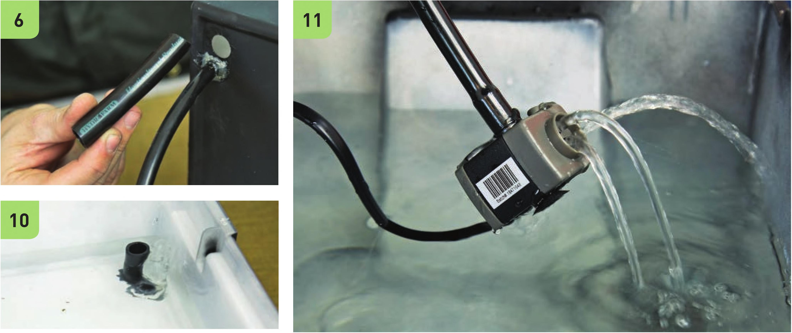

Prepare the Reservoir and Grow Bed Picking a grow bed and reservoir that fit well together is critical. The bottom of the grow bed should fit inside the reservoir and the lip of the grow bed should hang over the edge of the reservoir. 1 Add a strip of tape on the side of the reservoir. Fold the end of the tape under the bottom. This tape will be removed after painting to create a viewing window into the reservoir to check water height. 2 Spray paint the grow bed, grow bed lid, and reservoir. Make sure they are fully opaque so light does not enter the reservoir. If light enters the reservoir it can lead to algae growth. I used two layers of chalkboard spray paint on this garden. 3 Remove the tape once the spray paint dries to create a viewing window. 4 Wearing work gloves and eye protection, drill a Vs" and a W hole in the grow bed. Assemble the Irrigation System 5 Insert the 1 1 " segment of the 5/i6n black vinyl tubing into the W hole in the grow bed. Use the hot glue gun to fasten the 5/i6n tube in place. The 5/i6n tube should be flush with the surface of the grow bed. 6 Insert the 4" segment of Vi black vinyl tubing into the Vs" hole in the grow bed. It does not need to be glued into position. The height of the V2" tube will be adjusted based on substrate and pot selection. 7 Connect the 5/i6n tube to the submersible pump. 8 Fill the reservoir with water. 9 Position the pump on the bottom of the reservoir and place the grow bed on top of the reservoir. 10 Tu rn on the pump. Water should fill the grow bed and drain from the V2" tube. 11 Turn the pump off and water should drain back into the reservoir through the pump. HYDROPONIC GROWING SYSTEMS 103
